5. Comandes generals i usuaris
Gestió d'usuaris, permisos i exercicis pràctics d'administració realitzats a la consola del sistema Linux.
A continuació es pot consultar el document amb la pràctica completa de comandes:
📄 Veure / Descarregar Pràctica de Comandes Linux (PDF)
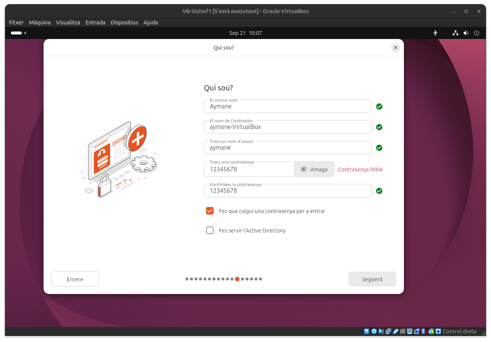
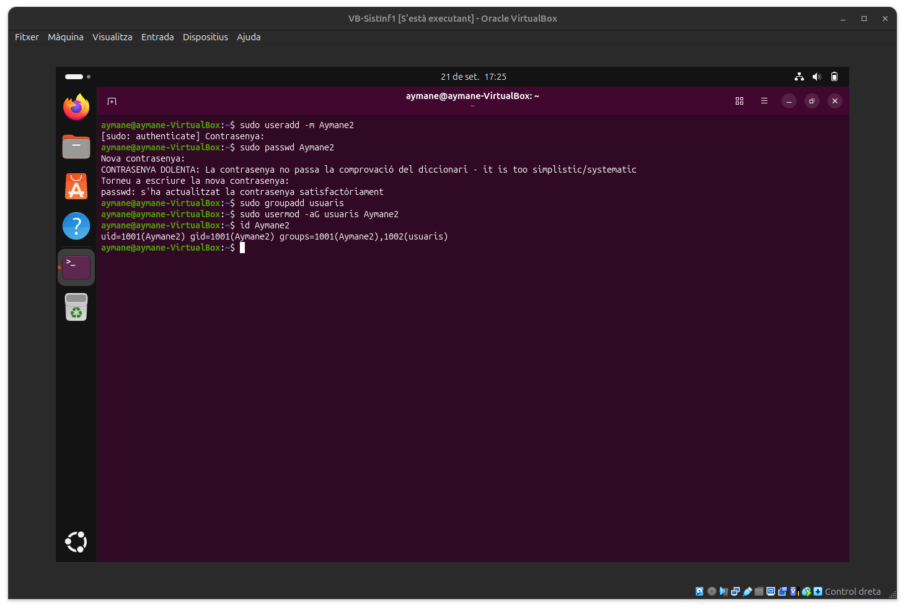
↑ Tornar a l'índex
6. Instal·lacions d'aplicacions
Procés d'instal·lació i verificació de diversos programes i eines dins de la màquina virtual.
Geany
Instal·lació de l'editor de text i entorn de desenvolupament lleuger Geany.
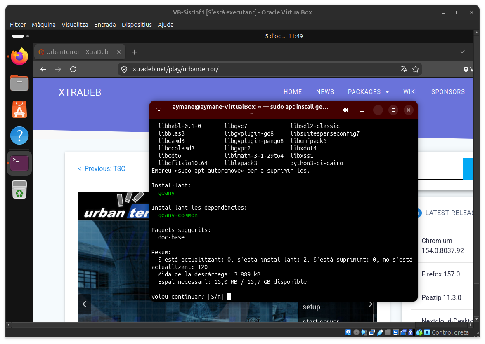
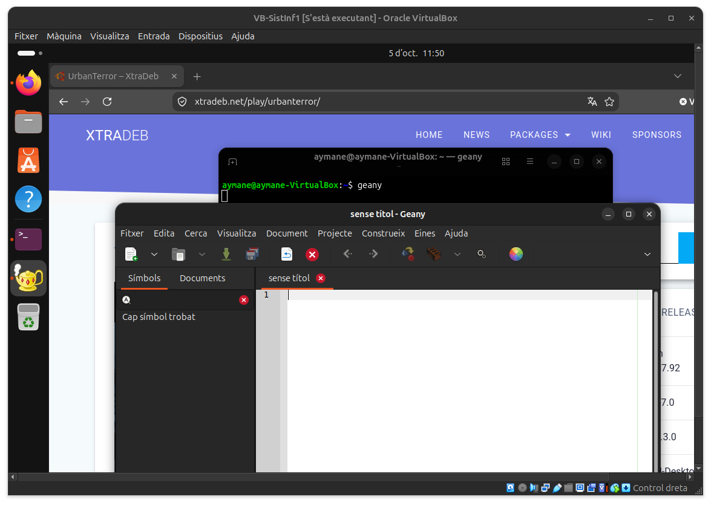
GIMP
Instal·lació i configuració de l'editor d'imatges GIMP.
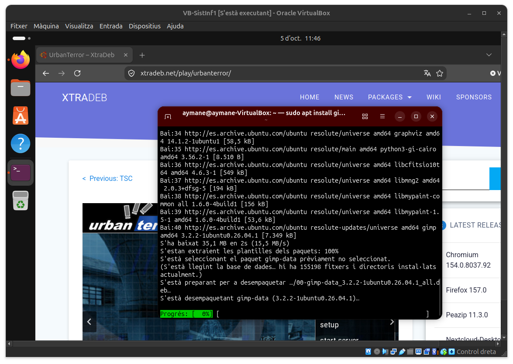
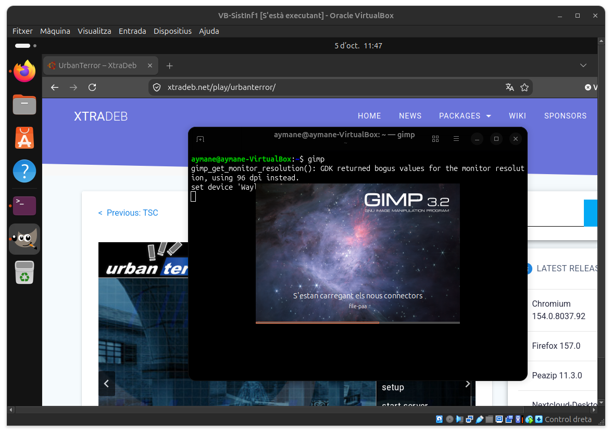
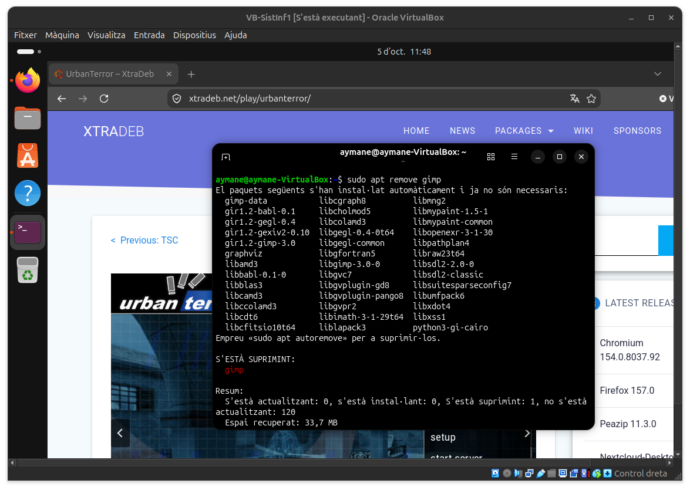
VLC Media Player
Instal·lació del reproductor multimèdia VLC.
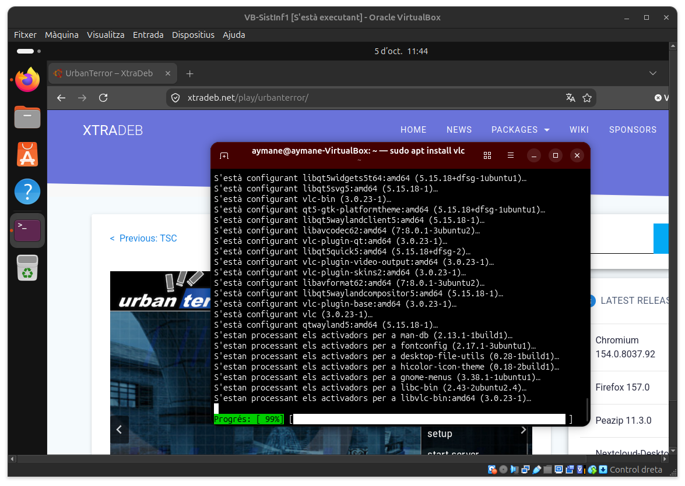
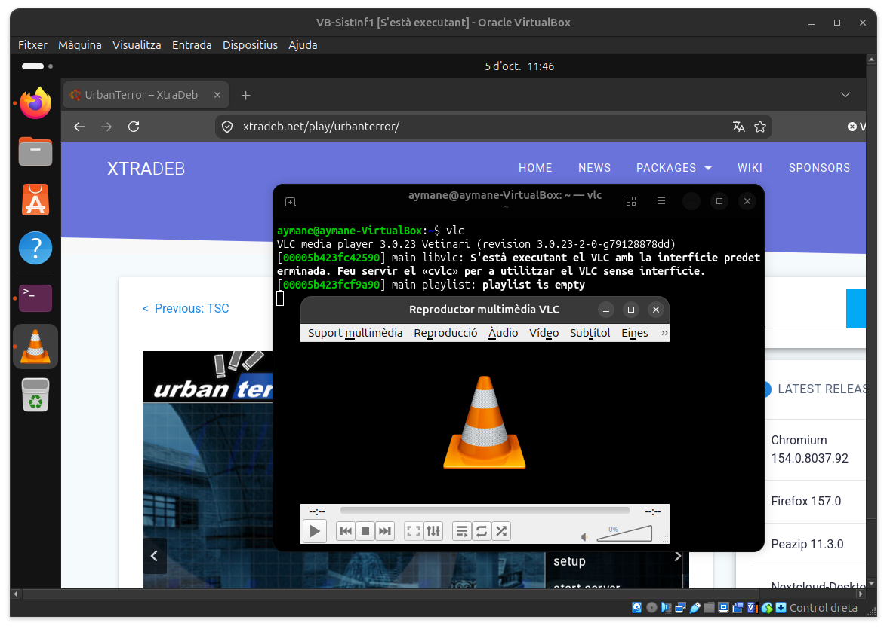
Jocs i Altres Aplicacions
Proves d'instal·lació d'altres aplicacions i jocs com MegaMario o UTerror.
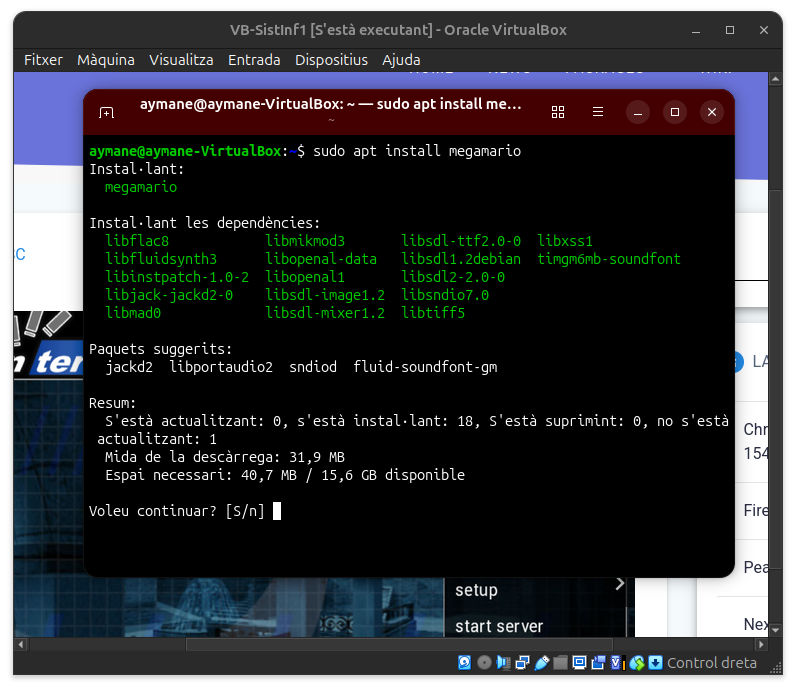
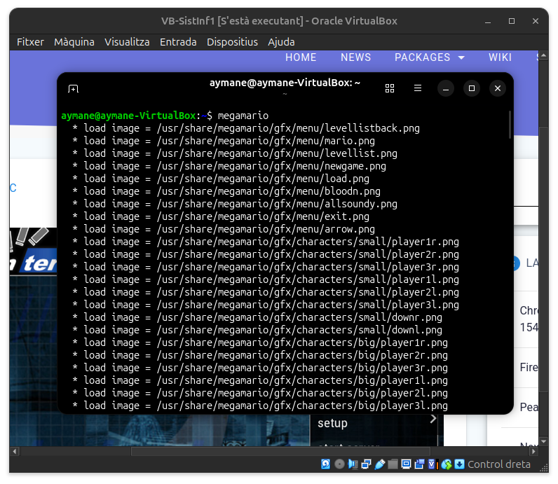
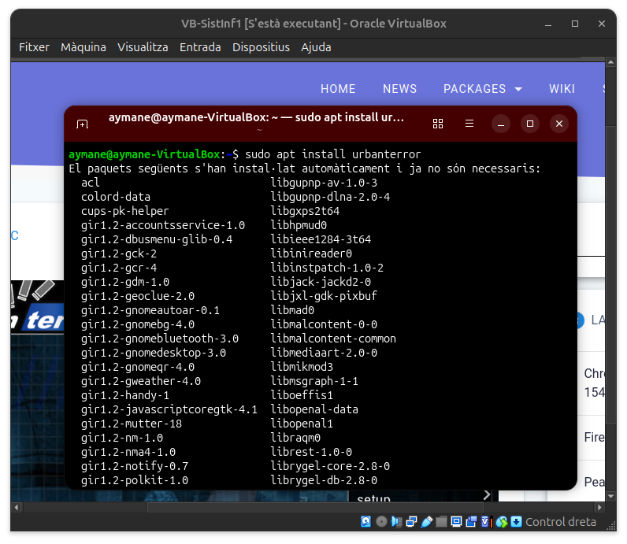
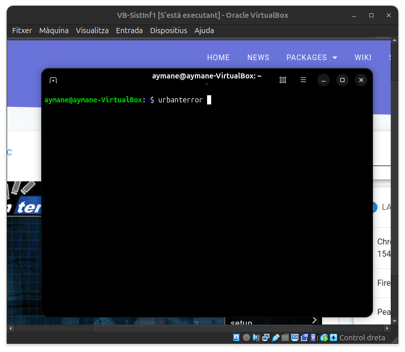
↑ Tornar a l'índex